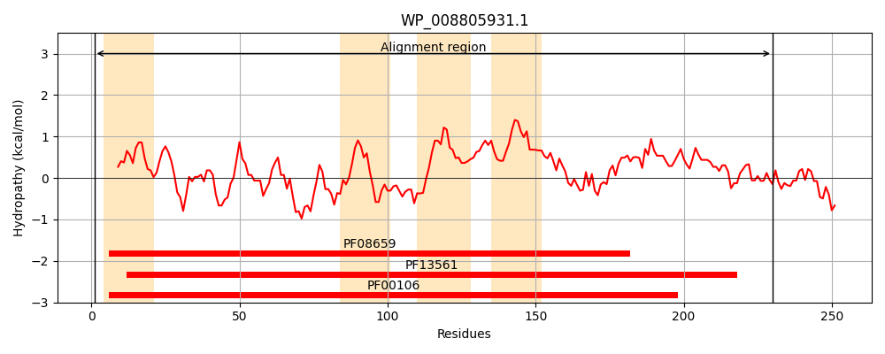
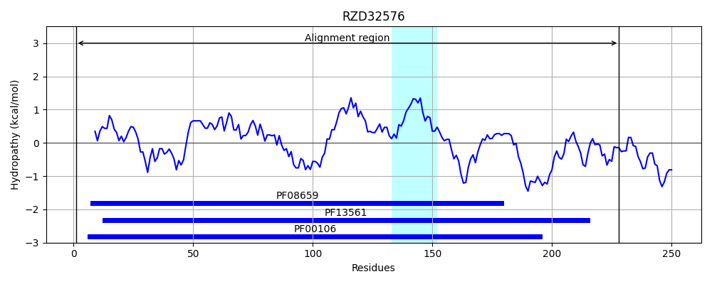
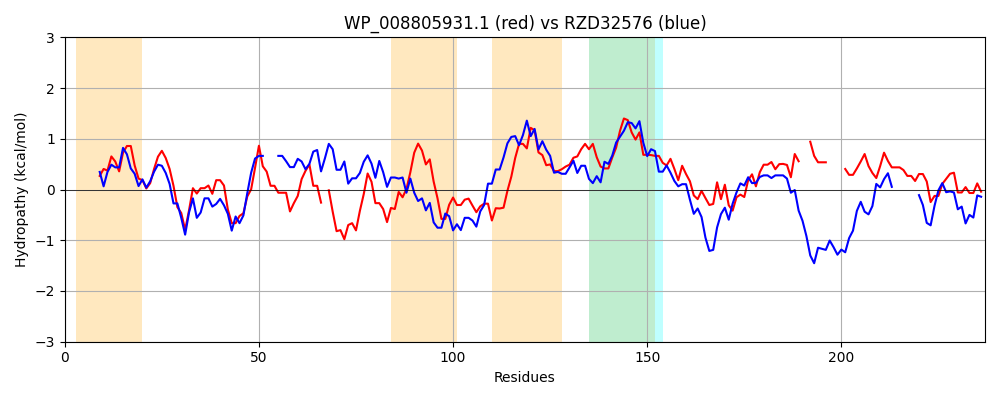

Hit Accession: RZD32576
Hit TCID: 1.A.115.1.2
Hit Description: gnl|BL_ORD_ID|19998 gnl|TC-DB|RZD32576|1.A.115.1.2 NAD-binding protein [Euryarchaeota archaeon]
Mach Len: 237
e:0.000000
Query TMS Count : 4
Hit TMS Count: 1
TMS-Overlap Score: 0.900000
Predicted Substrates:None
BLAST Alignment:
Score: 206 , Bit scores: 83 bits, E-value: 3.0e-19, Alignment length: 237, Percentage identity: 30
Query: 1 MTQPSHTAFITGASSGIGAIYAERLAARGYNLILAARREDRLLALADQLQARYAIQASILKADLSEE-HGIAAVEQRLQQDPAIDLFINNAGTAKMAGFLASTPREHQAIHTLNTTALLRLSYAALAAFIPRRRGTLINIASILALHTLPGSAVYSASKAWVLSFTRGLQDEFADSGVRIQAVLPAATAT--DLWPT----SGVALNALPTGTVMTTEDLVDAALRGLEMGEQVTLP 230
M A +TGASSGIG A +LA G + +ARRE RL LA + A + + L ADL+E G V+Q L +DL +NNAG ++ T +N A++ + A + + G ++N+ASI+ LPG A Y ASK + ++ + + G+ + + P TAT D P+ GV+ P TV A LRG + + +P
Sbjct: 1 MNWDEQVALVTGASSGIGFEMARQLADAGAQVFASARREQRLAQLAAEFPAG---RITPLVADLAEAGAGARLVKQVLADAGRLDLLVNNAGYGELVKADEQTTEAVARQMQVNFMAVIEATLAVIPTMKSQGGGRILNVASIVGHMGLPGIAAYVASKHALQGWSEASGYDLREHGIAVTCLCPGGTATEFDDHPSFDRHDGVSSFTQPAATV------ARAGLRGAWKRKPLVIP 228 | Protein Hydropathy Plots: |
|---|
|  |  |
Pairwise Alignment-Hydropathy Plot:
|
|---|
|  |